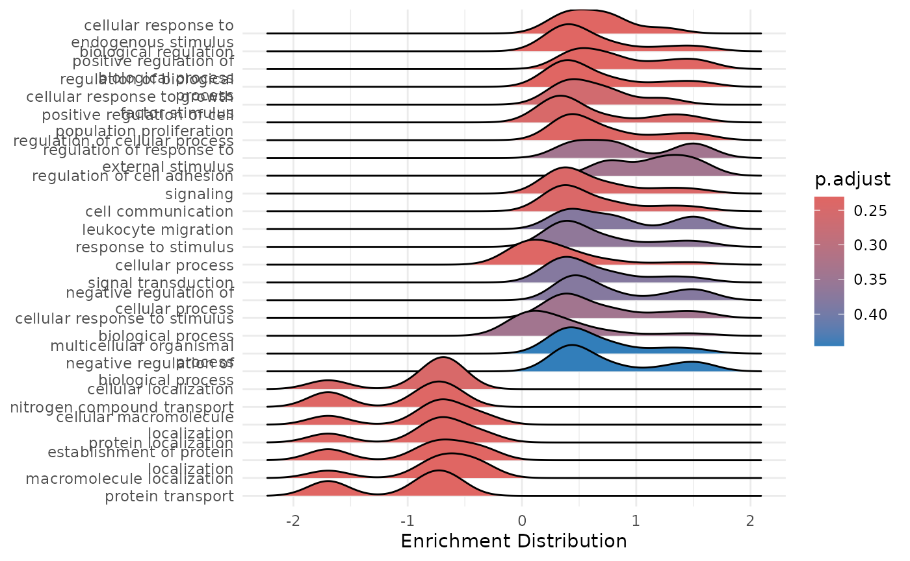

This vignette will guide you through the post analysis of the results
obtained from the HDAnalyzeR pipeline. The pathway enrichment analysis
is performed using the Gene Ontology, KEGG and Reactome databases from
clusterProfiler and ReactomePA packages
respectively.
If you want to learn more about ORA and GSEA, please refer to the following publications:
- Chicco D, Agapito G. Nine quick tips for pathway enrichment analysis. PLoS Comput Biol. 2022 Aug 11;18(8):e1010348. doi: 10.1371/journal.pcbi.1010348. PMID: 35951505; PMCID: PMC9371296. https://pmc.ncbi.nlm.nih.gov/articles/PMC9371296/
- https://yulab-smu.top/biomedical-knowledge-mining-book/enrichment-overview.html#gsea-algorithm
üìì Remember that these data are a dummy-dataset with artificial data and the results in this guide should not be interpreted as real results. This is why we are using extremely large p-value cutoffs in this case that should not be used in real data.
Loading the Data
We will load HDAnalyzeR and dplyr, load the example data and metadata that come with the package and initialize the HDAnalyzeR object.
library(HDAnalyzeR)
library(dplyr)
hd_obj <- hd_initialize(dat = example_data,
metadata = example_metadata,
is_wide = FALSE,
sample_id = "DAid",
var_name = "Assay",
value_name = "NPX")For the Over Representation Analysis we are going to use a list of differentially expressed proteins. In this example we are going to use the up-regulated proteins. We could also use the features list from the classification models or even run both and get the intersect as it is done in the Get Started guide.
de_res <- hd_de_limma(hd_obj, case = "AML")Over Representation Analysis
First, we will perform an Over Representation Analysis (ORA) using
the Gene Ontology database and the BP ontology. We will use the
hd_ora() and hd_plot_ora() functions to run
the analysis and plot the results respectively.
proteins <- de_res$de_res |>
filter(logFC > 0 & adj.P.Val < 0.05) |>
pull(Feature)
enrichment <- hd_ora(proteins, database = "GO", ontology = "BP")
enrichment_plots <- hd_plot_ora(enrichment)
enrichment_plots$dotplot
enrichment_plots$treeplot
#> NULL
enrichment_plots$cnetplot
Let’s change the database and the p-value threshold.
enrichment <- hd_ora(proteins, database = "Reactome", pval_lim = 0.2)
enrichment_plots <- hd_plot_ora(enrichment)
enrichment_plots$dotplot
enrichment_plots$treeplot
#> NULL
enrichment_plots$cnetplot
Gene Set Enrichment Analysis
We can also run a Gene Set Enrichment Analysis (GSEA) using the
hd_gsea() and hd_plot_gsea functions. The
hd_plot_gsea() function will plot the results.
⚠️ In this case, the function requires strictly differential expression results, so a ranked list of proteins is derived based on the
ranked_byargument.
enrichment <- hd_gsea(de_res, database = "GO", ontology = "BP", pval_lim = 0.55)
enrichment_plots <- hd_plot_gsea(enrichment)
enrichment_plots$dotplot
enrichment_plots$gseaplot
enrichment_plots$cnetplot
enrichment_plots$ridgeplot
We can also change the ranking variable to the product of logFC and
-log(adjusted p value) instead of the default logFC by changing the
ranked_by argument to “both”. We could also use other
variables such as p-value or any other variable in the DE results.
However, you should use as ranking a variable that has some form of
biological relevance of the variable.
enrichment <- hd_gsea(de_res,
database = "GO",
ontology = "BP",
pval_lim = 0.9,
ranked_by = "both")
enrichment_plots <- hd_plot_gsea(enrichment)
enrichment_plots$cnetplotüìì Remember once again that these data are a dummy-dataset with artificial data and the results in this guide should not be interpreted as real results. The purpose of this vignette is to show you how to use the package and its functions.
sessionInfo()
#> R version 4.5.2 (2025-10-31)
#> Platform: x86_64-pc-linux-gnu
#> Running under: Ubuntu 24.04.3 LTS
#>
#> Matrix products: default
#> BLAS: /usr/lib/x86_64-linux-gnu/openblas-pthread/libblas.so.3
#> LAPACK: /usr/lib/x86_64-linux-gnu/openblas-pthread/libopenblasp-r0.3.26.so; LAPACK version 3.12.0
#>
#> locale:
#> [1] LC_CTYPE=C.UTF-8 LC_NUMERIC=C LC_TIME=C.UTF-8
#> [4] LC_COLLATE=C.UTF-8 LC_MONETARY=C.UTF-8 LC_MESSAGES=C.UTF-8
#> [7] LC_PAPER=C.UTF-8 LC_NAME=C LC_ADDRESS=C
#> [10] LC_TELEPHONE=C LC_MEASUREMENT=C.UTF-8 LC_IDENTIFICATION=C
#>
#> time zone: UTC
#> tzcode source: system (glibc)
#>
#> attached base packages:
#> [1] stats4 stats graphics grDevices utils datasets methods
#> [8] base
#>
#> other attached packages:
#> [1] org.Hs.eg.db_3.22.0 AnnotationDbi_1.72.0 IRanges_2.44.0
#> [4] S4Vectors_0.48.0 Biobase_2.70.0 BiocGenerics_0.56.0
#> [7] generics_0.1.4 dplyr_1.1.4 HDAnalyzeR_0.99.0
#>
#> loaded via a namespace (and not attached):
#> [1] DBI_1.2.3 gson_0.1.0 gridExtra_2.3
#> [4] rlang_1.1.6 magrittr_2.0.4 DOSE_4.4.0
#> [7] ggridges_0.5.7 compiler_4.5.2 RSQLite_2.4.4
#> [10] reactome.db_1.94.0 png_0.1-8 systemfonts_1.3.1
#> [13] vctrs_0.6.5 reshape2_1.4.4 stringr_1.6.0
#> [16] pkgconfig_2.0.3 crayon_1.5.3 fastmap_1.2.0
#> [19] XVector_0.50.0 ggraph_2.2.2 labeling_0.4.3
#> [22] rmarkdown_2.30 enrichplot_1.30.1 graph_1.88.0
#> [25] ragg_1.5.0 purrr_1.2.0 bit_4.6.0
#> [28] xfun_0.54 cachem_1.1.0 graphite_1.56.0
#> [31] aplot_0.2.9 jsonlite_2.0.0 blob_1.2.4
#> [34] tweenr_2.0.3 BiocParallel_1.44.0 parallel_4.5.2
#> [37] R6_2.6.1 bslib_0.9.0 stringi_1.8.7
#> [40] RColorBrewer_1.1-3 limma_3.66.0 jquerylib_0.1.4
#> [43] GOSemSim_2.36.0 Rcpp_1.1.0 Seqinfo_1.0.0
#> [46] knitr_1.50 ggtangle_0.0.8 R.utils_2.13.0
#> [49] Matrix_1.7-4 splines_4.5.2 igraph_2.2.1
#> [52] tidyselect_1.2.1 viridis_0.6.5 qvalue_2.42.0
#> [55] yaml_2.3.10 codetools_0.2-20 lattice_0.22-7
#> [58] tibble_3.3.0 plyr_1.8.9 treeio_1.34.0
#> [61] withr_3.0.2 KEGGREST_1.50.0 S7_0.2.0
#> [64] evaluate_1.0.5 gridGraphics_0.5-1 desc_1.4.3
#> [67] polyclip_1.10-7 Biostrings_2.78.0 pillar_1.11.1
#> [70] ggtree_4.0.1 clusterProfiler_4.18.1 ggfun_0.2.0
#> [73] ggplot2_4.0.0 scales_1.4.0 tidytree_0.4.6
#> [76] glue_1.8.0 gdtools_0.4.4 lazyeval_0.2.2
#> [79] tools_4.5.2 ggnewscale_0.5.2 data.table_1.17.8
#> [82] fgsea_1.36.0 ggiraph_0.9.2 graphlayouts_1.2.2
#> [85] fs_1.6.6 tidygraph_1.3.1 fastmatch_1.1-6
#> [88] cowplot_1.2.0 grid_4.5.2 tidyr_1.3.1
#> [91] ape_5.8-1 nlme_3.1-168 patchwork_1.3.2
#> [94] ggforce_0.5.0 cli_3.6.5 rappdirs_0.3.3
#> [97] textshaping_1.0.4 fontBitstreamVera_0.1.1 viridisLite_0.4.2
#> [100] ReactomePA_1.54.0 gtable_0.3.6 R.methodsS3_1.8.2
#> [103] yulab.utils_0.2.1 fontquiver_0.2.1 sass_0.4.10
#> [106] digest_0.6.37 ggrepel_0.9.6 ggplotify_0.1.3
#> [109] htmlwidgets_1.6.4 farver_2.1.2 memoise_2.0.1
#> [112] htmltools_0.5.8.1 pkgdown_2.2.0 R.oo_1.27.1
#> [115] lifecycle_1.0.4 httr_1.4.7 GO.db_3.22.0
#> [118] statmod_1.5.1 fontLiberation_0.1.0 bit64_4.6.0-1
#> [121] MASS_7.3-65